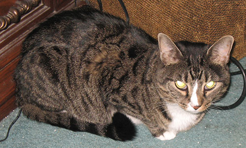
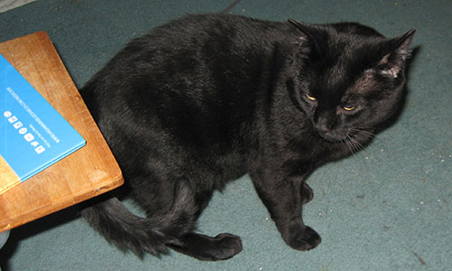
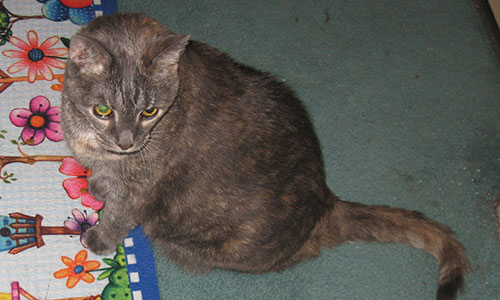

October 2015
 Tassie 6yrs Tabby. Tassie was rescued by my niece. She was from a feral mother. She was my first Christmas gift that year. It took her almost 3 weeks before she trusted me to even touch her. She is a little{ 7lb} love.  Brewster was also rescued by my niece. He is a 5 year old black DSH. Loves his belly rubs! .  Callie is going on 14yrs. She is a gray DSH. She has been rescued 3 times. Found in a church parking lot as a kitten, she spent 3 yrs as a rectory cat. When Father retired he could not keep her. She was adopted by my neighbor. After 10 yrs. my neighbor died and Callie moved across the street to my home.
|